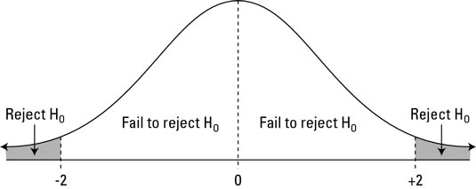
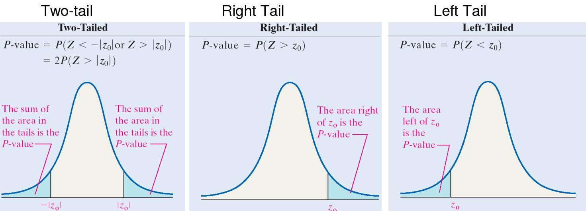

Chapter 2 Background
In this chapter we will be covering background terminology that is useful for understanding Bayes Factors. This will include Frequentist vs Bayesian statistics and topics within each. These include hypothesis testing and p values under the Frequentist method, and prior and posterior odds under the Bayesian approach. If you already feel comfortable with these topics feel free to skip them.
2.1 Bayesian vs Frequentist Statistics
Frequentists believe that function parameters are fixed unknown constants with no distribution. Instead of updating their beliefs, frequentists look at a data set and draw conclusions based on the frequency of this data. Bayesian statistics provide formal methods of incorporating prior knowledge into the estimation of unknown parameters. In Bayesian statistics, parameters are treated as random variables (with a distribution) and not as constants. This allows us to update our beliefs in light of new data with hopes of keeping our models accurate and relevant. Bayesians use a prior distribution multiplied by a likelihood equation to achieve a posterior distribution. For any new data received, this posterior will become the new prior and be multiplied by the likelihood to arrive at an updated posterior. Many statisticians consider Bayesian statistics to be the ‘logical approach’ to evidence evaluation.
2.2 Hypothesis Testing
Hypothesis testing is used to test if the results of an experiment are significant and what the odds are that they happened by chance. One starts by stating two conflicting theories: the null hypothesis \(H_0\), and the alternative hypothesis, \(H_1\). Data will either support or fail to support your null hypothesis. If your data doesn’t support the null, this means that the data probably happened by chance. In this case you will not be able to replicate your experiment and you should reject the null. On the other hand, if your data do support the null hypothesis, this means your data probably didn’t happen by chance. This experiment can be replicated and you should fail to reject the null.

2.3 The P-value
The p-value in hypothesis testing is the probability of obtaining results equal to or more extreme than the observed results, assuming that the null hypothesis is true. If the p-value is less than 𝛼 (the significance level), this means that there is a small probability of observing this data if the null hypothesis were true, therefore suggesting that we should reject the null hypothesis. If the p-value is above 𝛼, then we fail to reject the null. \(\\\) \(\\\) The P-Value Approach: \(\\\) Assume that the null hypothesis is true. \(\\\) Compute the test statistic \(z_0 = \frac{\bar{X} - \mu_0}{\sigma / \sqrt{n}}\) \(\\\)

2.4 Prior Odds
A key aspect to Bayesian statistics is the use of prior odds. Priors are an existing belief about the probability of an event. The prior odds are the ratio of the probabilities of the two competing hypotheses.
\[ \begin{aligned} \textit{Prior Odds} = \frac{P(H_1)}{P(H_0)} \end{aligned} \] \(\\\)

2.5 Posterior Odds
Posterior odds, are the updated probability. They are the result of taking your prior odds and revising them by taking into account new information.
\[ \begin{aligned} \textit{ Posterior Odds}= \frac{P(H_1| \textit{ data})}{P(H_0| \textit{ data})} \end{aligned} \]